Теоретична лекция по нерешени проблеми пред модерната физика, както и участието на българските учени в разгадаването им
Наблюдение
„Защо виждаме това?”
Модел
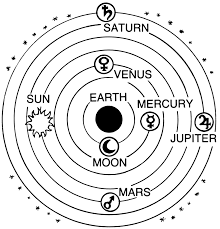
Предсказание
Наблюдение
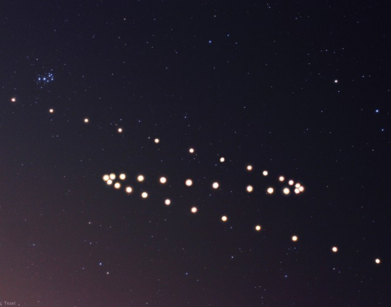
Резултат: положителен
Резултат: отрицателен
Напълно грешен ли е моделът или е просто неточен?
Напълно грешен ли е моделът или е просто неточен?
Модификация! Още измервания!
Геоцентричен модел
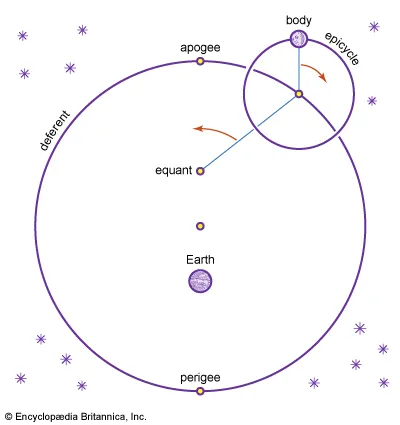
неточно + прекалено сложно!
нов модел
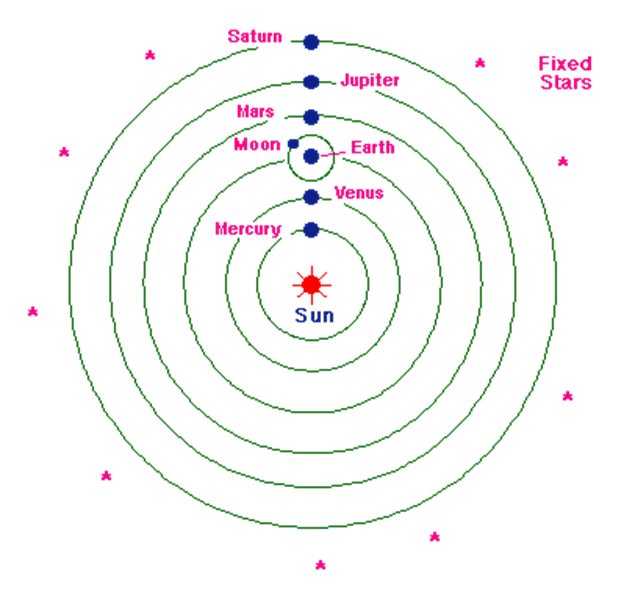
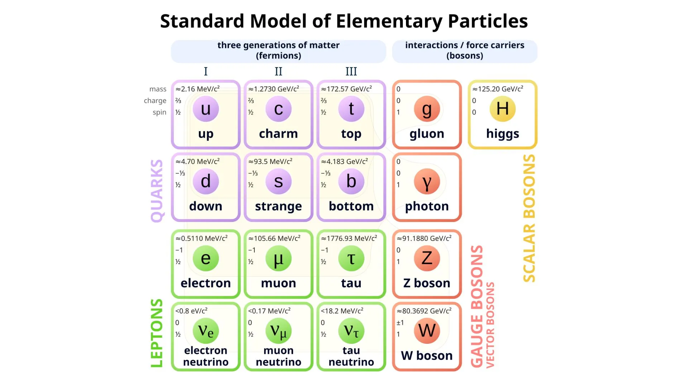
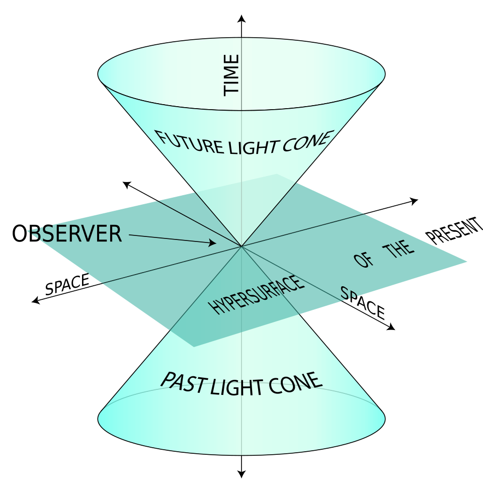
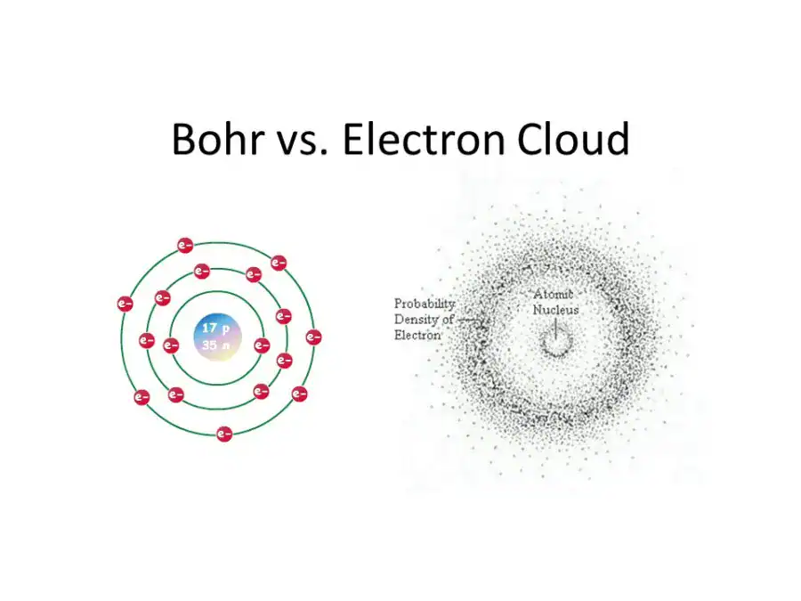
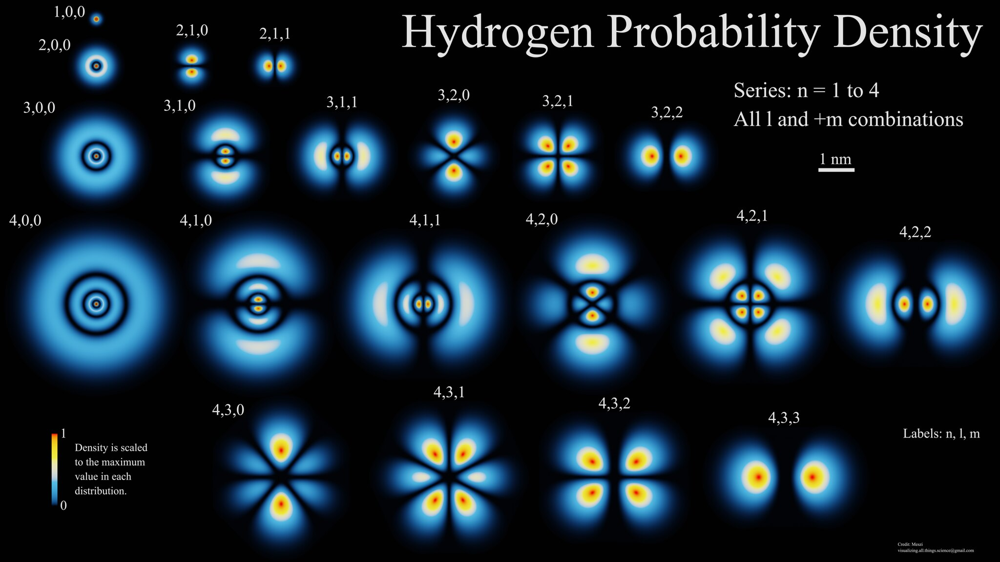
Стандартният модел описва всички експериментални данни!
(почти...)
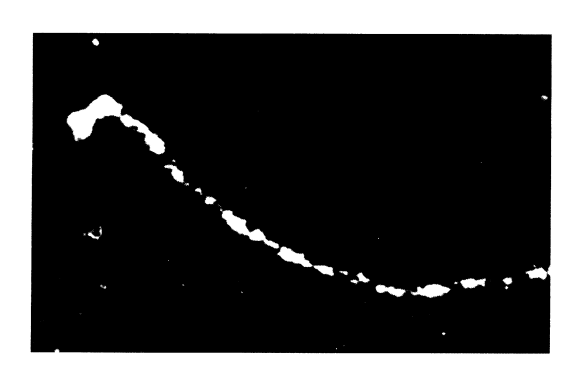
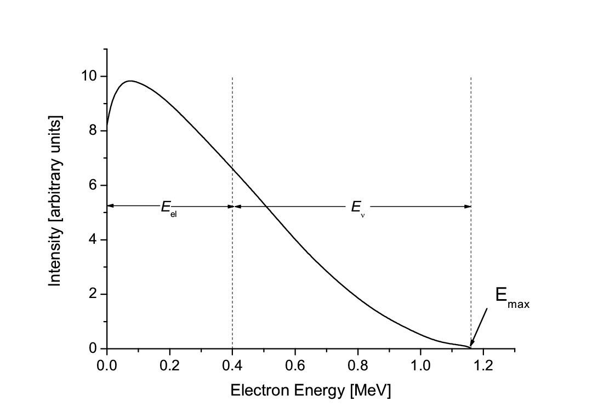
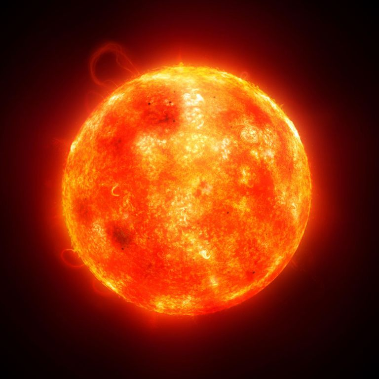
Източник на много електронно неутрино!
Raymond Davis,
John Bahcall (1964)
Колко неутрино стигат до Земята?
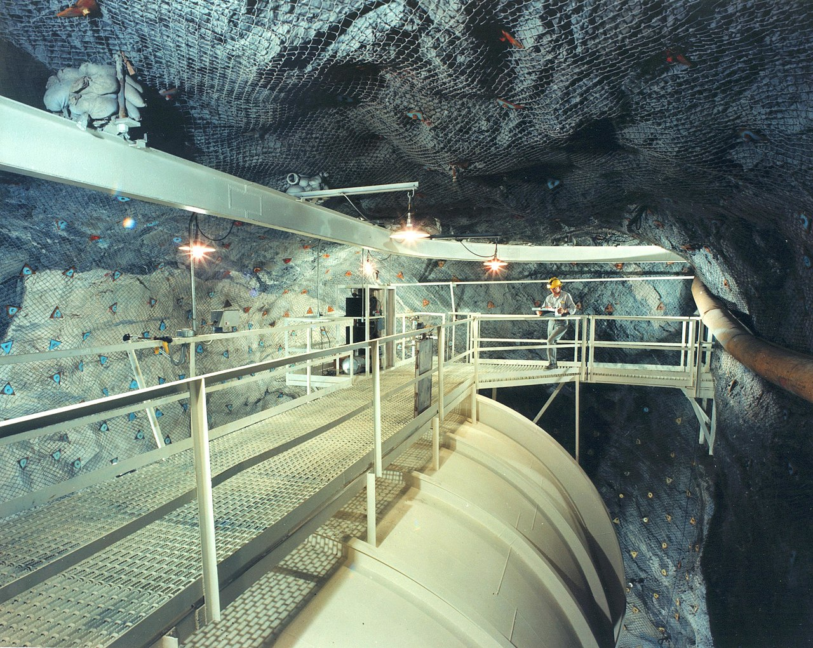
модел + детектор
Над 50% липсващи неутрино!
Bruno Pontecorvo
Квантова механика: Не можем да знаем положение и скорост едновременно!
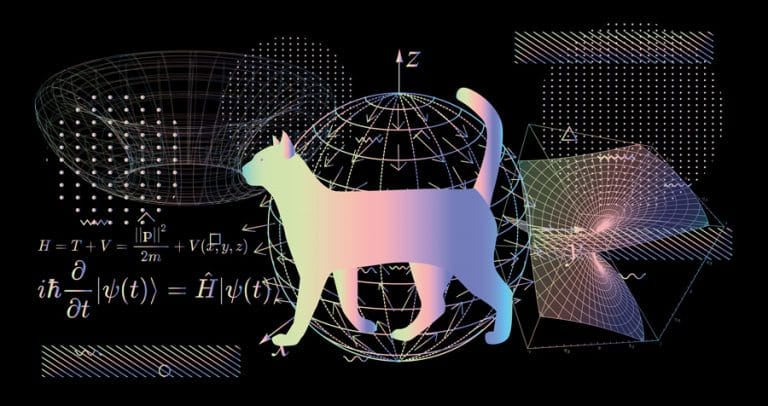
Има величини, които можем да мерим заедно, и такива, които не можем
маса и енергия
положение и скорост
Квантов ефект:
състояние няма определена маса
комбинация от всички маси едновременно!
(квантова суперпозиция)
Квантов ефект:
измерваме физична величина
променяме системата!
(колапс в състояние с определена стойност)
Как се променя състоянието на една система във времето?
движение
и
взаимодействие
Как се променя състоянието на неутриното във времето?
движение
няма взаимодействие + вакуум
еволюция
кинетична енергия
Не можем да знаем едновременно вида неутрино и неговата маса!
При движение състоянието на системата се променя!
Обяснява $``липсващите"$ неутрино!
Съгласие между теория и експеримент!
Обаче...
Поне едно неутрино трябва да има маса, за да има осцилации!
Трябва модификация на Стандартния модел!
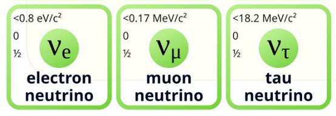
Да
експерименти за осциалция на неутрино
$\delta_{CP}$
асиметрия материя-антиматерия!
(все още не е наблюдавано)
Стерилно неутрино?
Тъмна материя
Освен гравитационно - не взаимодейства
стерилно неутрино - частица на тъмната материя?
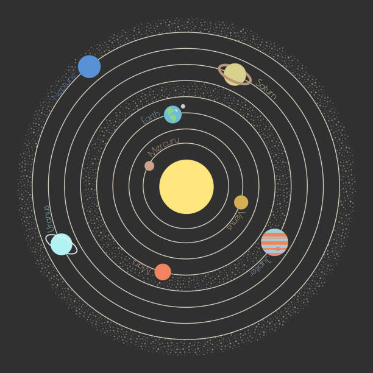
Гравитационно взаимодействие:
\[F_{G} = \frac{\gamma m_{1}m_{2}}{r^{2}}\]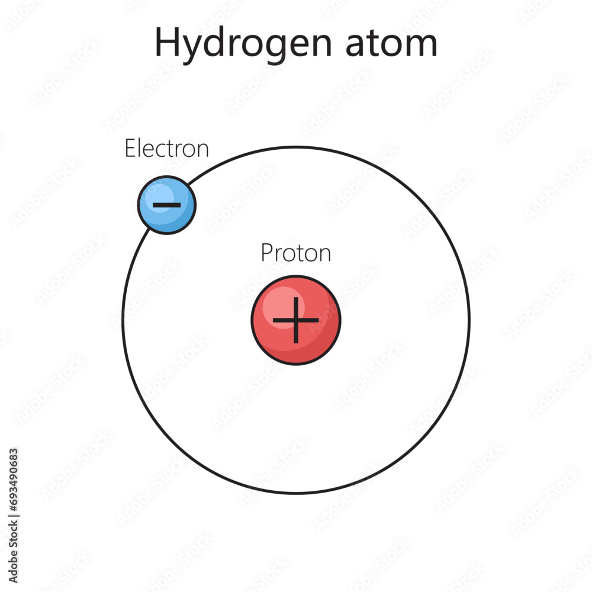
Електростатично взаимодействие:
\[F_{C} = \frac{kq_{1}q_{2}}{r^{2}}\]Намаляват с увеличаване на разстоянието!
система протон-електрон
(добавяме енергия)
свободен протон и електрон
система кварк-антикварк
(добавяме енергия)
свободен кварк и антикварк?
Имаме хипотеза!
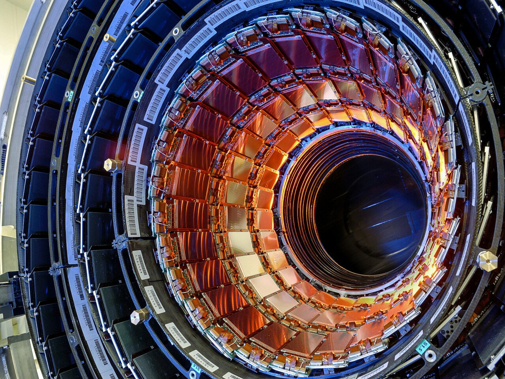
Трябва да проверим експериментално!
Експеримент: сблъскване на насрещни снопове ядра
Резултат:
Изключително много частици
и никоя от тях кварк!
Увеличаваме енергията!
Резултат:
Още повече частици!
Все още няма кварки!
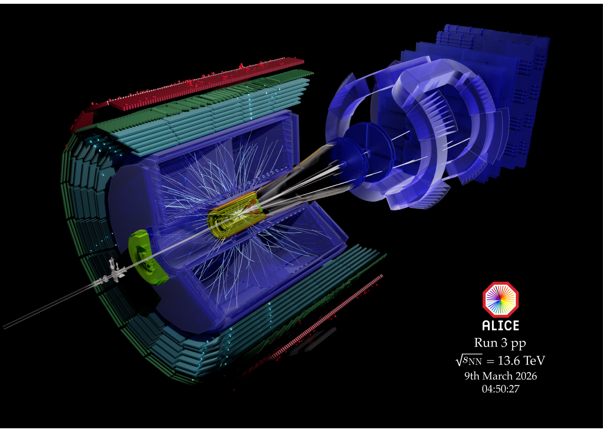
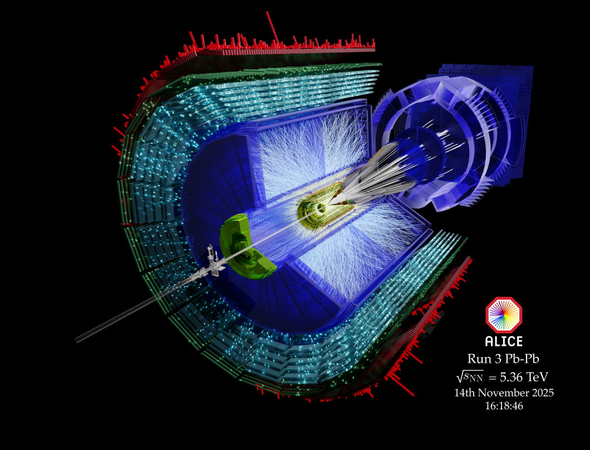
Но теоретичните модели са полезни...
Кварките - просто математическа абстракция?
Експеримент: разсейване на релативистки електрони от протони
Резултат:
Протоните са съставени от точкови
невзаимодействащи си
частици!
Противоречие?
невзаимодействащи си частици
слабо свързана система
лесно се разрушава
свободни кварки
експерименти по сблъскване на частици
много високи енергии
няма кварки!